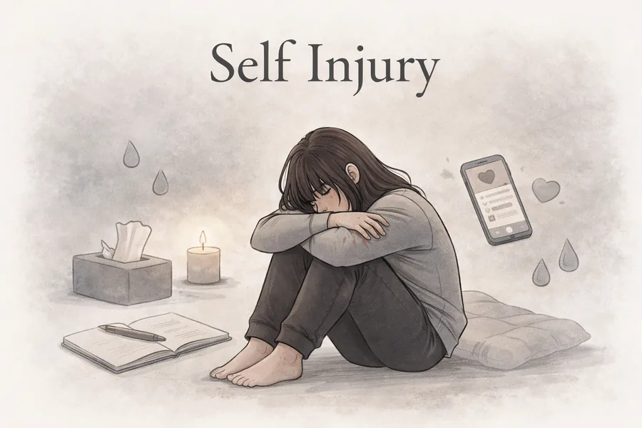

Understanding Self-Injury: Breaking the Silence on Self-Injury Awareness Day

Please note: This blog discusses self-injury (self-harm). If you find this topic difficult, please take care of yourself. Support is available — you'll find helplines and resources at the end of this post.
Every year on 1st March, Self-Injury Awareness Day encourages us to have open, honest conversations about self-harm, a subject still surrounded by stigma and misunderstanding. As a student counsellor, I'm learning every day how much courage it takes for someone to talk about self-injury, and how important it is that we respond with compassion rather than judgement.
What is self-injury?
Self-injury, sometimes called self-harm, is when someone deliberately hurts themselves as a way of coping with emotional pain, distress, or overwhelming feelings. It can take many forms, and it affects people of all ages, backgrounds, and walks of life.
One of the things I've come to understand through my training is that self-injury is almost never about seeking attention. For most people, it's deeply private. It's also important to know that self-injury and suicidal intent are not the same thing, although the two can sometimes overlap — which is why professional support matters so much.
Why do people self-injure?
There's no single reason someone might turn to self-harm, and everyone's experience is different. But through my studies and placement work, I've come to see some common threads:
- Emotional overwhelm. When emotions feel too intense to bear, self-injury can feel like the only way to release that pressure. For some people, physical pain is easier to process than emotional pain.
- A need for control. When life feels chaotic or unpredictable, self-injury can feel like the one thing a person has control over.
- Difficulty expressing feelings. Some people have never had the space or the language to communicate their emotions. Self-injury can become a way of expressing what can't be said aloud.
- Self-punishment. Low self-worth, guilt, and shame can lead someone to feel they deserve to be hurt, often rooted in earlier experiences such as abuse, bullying, or constant criticism.
- Feeling numb or disconnected. For some, self-injury is a way of feeling something when emotional numbness or dissociation has taken hold.
Self-harm is not the problem itself — it's a response to the problem. When we understand that, we can start to meet people with curiosity and compassion instead of fear.
Common myths about self-injury
"It's just attention-seeking." Most people who self-injure go to great lengths to hide it. Even when self-injury is visible, it's a sign that someone is in real distress and needs compassion, not dismissal.
"They can just stop if they want to." Self-injury can become a deeply ingrained coping pattern. It isn't easy to simply switch off, especially without alternative ways of managing distress. Recovery takes time, patience, and often professional support.
"Only teenagers self-harm." While self-injury often begins in adolescence, many adults continue or begin self-harming for the first time in adulthood. It is not something people simply grow out of.
"If the injuries aren't severe, it's not serious." All self-injury is significant. The severity of a wound doesn't reflect the depth of someone's emotional pain.
How counselling can help
Counselling offers a safe, non-judgemental space to begin exploring what's driving the urge to self-injure. An integrative approach means drawing on different therapeutic methods depending on what feels most helpful for each person — exploring root causes, developing healthier coping strategies, building emotional awareness, or strengthening self-compassion.
Recovery isn't about perfection. There may be setbacks along the way, and that's okay. What matters is having support, understanding, and the right tools to move forward at your own pace.
How to support someone who self-injures
If someone you care about is self-harming, it can be incredibly difficult to know what to say or do. Here are some gentle suggestions:
- Listen without judgement. Sometimes the most powerful thing you can do is simply be there. Let them talk if they want to, and resist the urge to fix things straight away.
- Avoid ultimatums. Saying "just stop" or "promise me you won't do it again" can add pressure and shame. Instead, let them know you're there and gently encourage them to seek support.
- Educate yourself. The more you understand about self-injury, the better equipped you'll be to help. The charities listed below have excellent resources for friends and family.
- Look after yourself too. Supporting someone through self-harm can be emotionally draining. It's okay to seek your own support.
Self-injury and suicide risk
It's important to say that self-injury and suicide are not the same thing. Many people who self-harm are not suicidal — for them, self-injury is a way of coping with life, not a desire to end it.
However, the two can sometimes be connected, and research suggests that people who self-injure may be at a greater risk of suicidal thoughts over time, particularly if the underlying distress goes unsupported. This doesn't mean that everyone who self-harms will become suicidal — but it does mean we should take all self-injury seriously, and that having open conversations about both self-harm and suicide can be a vital part of keeping someone safe.
Charities and organisations that can help
If you or someone you know is struggling with self-injury, these organisations offer information, support, and specialist services:
- Self Injury Support (selfinjurysupport.org.uk) — A national charity offering a text and email support service called TESS for women and girls affected by self-harm, along with resources and professional training.
- Harmless (harmless.org.uk) — A user-led organisation providing services for people who self-harm, those affected by it, and professionals.
- Mind (mind.org.uk) — One of the UK's leading mental health charities. Infoline: 0300 123 3393.
- YoungMinds (youngminds.org.uk) — Focused on children and young people's mental health. Parents' helpline: 0808 802 5544.
- Samaritans (samaritans.org) — Available 24 hours a day, 365 days a year. Call 116 123 (free) or email jo@samaritans.org.
- Shout (giveusashout.org) — A free, confidential, 24/7 text-based support service. Text SHOUT to 85258.
- Childline (childline.org.uk) — Free support for children and young people under 19. Call 0800 1111 or chat online.
- CALM (thecalmzone.net) — Focused on men's mental health. Call 0800 58 58 58 (5pm to midnight daily) or use the webchat.
As a student counsellor, I don't have all the answers. But I'm learning that you don't need to have all the answers to make a difference. Sometimes it starts with simply being willing to listen.
This Self-Injury Awareness Day, let's choose understanding over judgement, and compassion over silence. If you're struggling, please reach out to one of the organisations above, or to someone you trust. You don't have to face this alone.
Ready to take the next step?
Book a free consultation